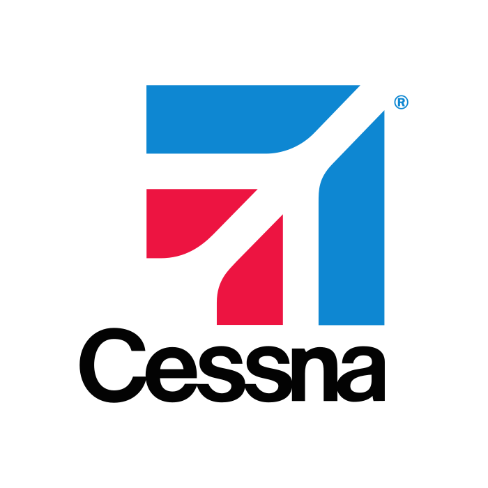
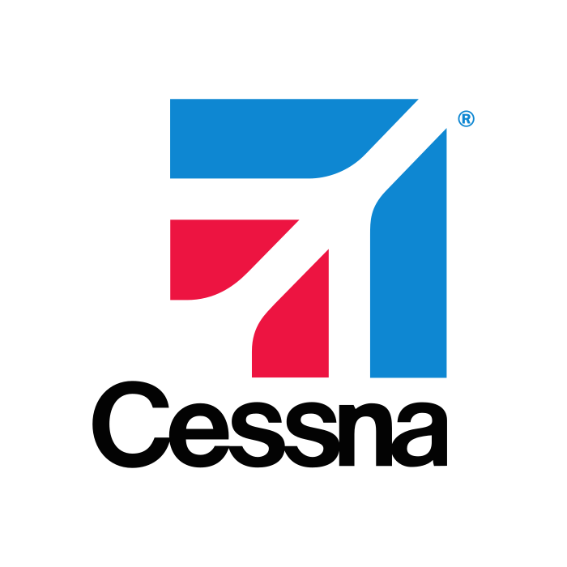

I am a PhD Candidate at
 Virginia Tech
in the Electrical & Computer Engineering Department. I work on robotics, digital signal processing, machine learning, and acoustics advised by
Dr. Rolf Müller.
My current work focuses on bat bio-sonar and bat robots
Virginia Tech
in the Electrical & Computer Engineering Department. I work on robotics, digital signal processing, machine learning, and acoustics advised by
Dr. Rolf Müller.
My current work focuses on bat bio-sonar and bat robots
I completed my Bachelors of Science at the
 University of Maryland
in Electrical Engineering at the A. James Clark School of Engineering where I was on the Dean's List and on Scholarship.
I was also awarded my Masters of Science from
University of Maryland
in Electrical Engineering at the A. James Clark School of Engineering where I was on the Dean's List and on Scholarship.
I was also awarded my Masters of Science from
 Virginia Tech
where I
Virginia Tech
where I
Since then, I've I co-authored papers, published patents on my work, and presented at conferences — including winning the Best Presentation Award at the Acoustical Society of America Conference in Sydney, Australia in December 2023.
I am incredibly fortunate to have worked with amazing engineers and scientists at
Bosch Research,
 Ford Autonmous Vehicles,
Ford Autonmous Vehicles,
 Army Research Lab,

Cessna, and
Army Research Lab,

Cessna, and
 Bell Helicopter.
Bell Helicopter.
Characterization of 4.5 kV charge-balanced SiC MOSFETs
Jack Knoll, Ibrahim Eshera, Christina DiMarino, Reza Ghandi
2021 IEEE Applied Power Electronics Conference and Exposition (APEC). IEEE, 2021.
PDF
Blog
BibTeX
Development of a tension-controlled soft-robotic actuation system for a biomimetic bat robot
Sanmeel Vijay Lagad, Ibrahim M Eshera, Sounak Chakrabarti, Rolf Müller
The Journal of the Acoustical Society of America. JASA, 2022.
PDF
Blog
BibTeX